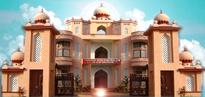

Students

Film and Drama Club
Staff Coordinator: Prof. Sudheer, Department of Mechanical Engineering. EXECUTIVE COMMITTEE Student Coordinators: Jishnuraj R & MariyaVimala Augustine
Online media coordinator:Govind R G Technical head: Jerin Tom Public Relations Coordinator : Keerthana Film Festival Coordinator […]
Women Cell
Women’s Cell is a community of girl students in T K M College of Engineering, who share a common purpose to learn, educate and collaborate on ideas that have
the power to effect meaningful and positive change while fighting the odds they face. It is an expanding network that brings them together to learn, laugh, and […].